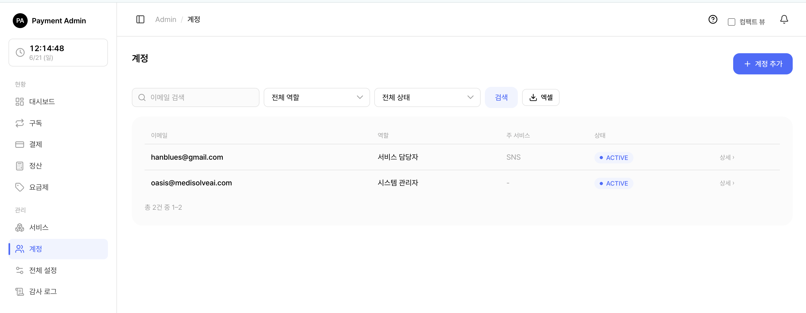
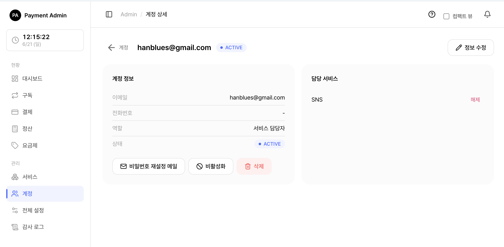

6. 계정 관리
관리자 콘솔에 로그인하는 계정을 만들고 관리하는 화면입니다. 어드민 콘솔을 사용할 수 있는 사람은 모두 여기서 만든 계정으로 로그인합니다.
🍎
6.1 들어가기 전에 — 두 가지 역할
이 시스템의 계정에는 두 가지 역할이 있습니다.
| 역할 | 무엇을 할 수 있나 | 담당 서비스 |
|---|---|---|
| SYSTEM_ADMIN (시스템 관리자) | 모든 서비스·요금제·구독·결제·계정·전체 설정·감사 로그를 관리 | 모든 서비스 (배정 불필요) |
| SERVICE_MANAGER (서비스 담당자) | 자신에게 배정된 서비스의 요금제·구독만 관리 | 배정된 서비스만 |
🍎쉽게 말하면 SYSTEM_ADMIN은 회사 전체를 보는 관리자, SERVICE_MANAGER는 자기가 맡은 서비스만 보는 담당자입니다.
주의: 시스템 관리자(SYSTEM_ADMIN)에게는 담당 서비스를 배정할 수 없습니다. 이미 모든 서비스에 접근할 수 있기 때문입니다.
6.2 계정 목록 보기 · 검색

좌측 메뉴에서 계정을 누르면 등록된 계정 목록이 나옵니다.
목록에는 이메일 · 역할 · 주 서비스 · 상태가 표시됩니다.
검색과 필터
| 도구 | 설명 |
|---|---|
| 검색창 | 이메일 일부를 입력하면 해당 계정만 추려집니다. |
| 역할 필터 | 시스템 관리자 / 서비스 담당자로 좁혀 봅니다. |
| 상태 필터 | 활성(ACTIVE) / 설정 대기(PENDING) / 잠김(LOCKED)으로 좁혀 봅니다. |
| 엑셀 다운로드 | 현재 검색·필터 조건 그대로 목록을 엑셀(.xlsx) 파일로 내려받습니다. |
💡참고: 삭제한 계정은 목록에 나타나지 않습니다. 어떤 필터를 걸어도 보이지 않습니다(완전히 지우지 않고 숨기는 방식이라 기록은 남습니다).
계정 상태가 뜻하는 것
| 상태 | 의미 |
|---|---|
| 활성 (ACTIVE) | 비밀번호가 설정되어 정상 로그인 가능 |
| 설정 대기 (PENDING) | 계정은 만들어졌지만 아직 비밀번호 미설정 → 로그인 불가 |
| 잠김 (LOCKED) | 로그인 비밀번호를 여러 번 틀려 일시 잠김 (15분 후 자동 해제) |
| 비활성 (DISABLED) | 관리자가 일부러 막아 둔 상태 → 로그인 불가 |
6.3 새 계정 만들기

- 계정 목록 화면 오른쪽 위 계정 추가 버튼을 누릅니다.
- 이메일을 입력합니다. (로그인 아이디 겸 연락처로 쓰입니다. 시스템 전체에서 중복될 수 없습니다.)
- 필요하면 전화번호를 입력합니다. (선택)
- 역할을 고릅니다 — 기본값은 서비스 담당자(SERVICE_MANAGER)입니다.
- 서비스 담당자를 골랐다면, 아래에 나타나는 담당 서비스 체크박스에서 맡을 서비스를 선택합니다. (지금 비워 두고 나중에 배정해도 됩니다.)
- 계정 생성 + 설정 메일 발송 버튼을 누릅니다.
계정이 만들어지면 설정 대기(PENDING) 상태가 되고, 입력한 이메일로 비밀번호 설정 메일이 자동 발송됩니다. 받는 사람이 메일 속 링크에서 비밀번호를 직접 정하면 활성(ACTIVE) 상태가 되어 로그인할 수 있습니다.
⚠️중요: 비밀번호 설정 링크는 발송 후 48시간 동안만 유효합니다. 만료되면 계정 상세에서 다시 발송하면 됩니다.
주의: 메일 발송에 실패해도 계정 자체는 정상적으로 만들어집니다. "메일 발송에 실패했습니다" 안내가 뜨면, 메일(SMTP) 설정을 확인한 뒤 계정 상세에서 비밀번호 재설정 메일로 다시 보낼 수 있습니다.
팁: 시스템 관리자(SYSTEM_ADMIN)로 만들면 담당 서비스 선택란이 사라집니다. 모든 서비스에 접근하기 때문입니다.
6.4 계정 정보 수정
계정을 눌러 상세 화면으로 들어간 뒤 오른쪽 위 정보 수정 버튼을 누르면 이메일과 전화번호를 바꿀 수 있습니다.
💡참고: 수정 화면에서는 역할을 바꿀 수 없습니다. 역할이 잘못 지정되었다면 계정을 새로 만드는 방식으로 처리하세요.
팁: 어떤 서비스의 대표 담당자로 지정된 계정의 이메일을 바꾸면, 그 서비스의 담당자 이메일도 자동으로 함께 바뀝니다. 따로 손볼 필요가 없습니다.
6.5 담당 서비스 배정 · 해제
서비스 담당자(SERVICE_MANAGER) 계정 상세 화면 오른쪽에는 담당 서비스 카드가 있습니다.
서비스 배정하기
- 담당 서비스 카드의 드롭다운에서 맡길 서비스를 고릅니다.
- 서비스 추가 버튼을 누릅니다.
- 해당 서비스가 담당 목록에 추가됩니다.
서비스 해제하기
- 담당 서비스 목록에서 해제할 서비스 옆 해제 버튼을 누릅니다.
- 즉시 담당에서 빠집니다.
💡참고: 해제 버튼은 확인 절차 없이 바로 처리됩니다. 신중히 누르세요.
주의: 시스템 관리자(SYSTEM_ADMIN)에게는 서비스를 배정할 수 없습니다. 배정을 시도하면 오류가 표시됩니다.
6.6 비활성화 · 활성화
잠시 로그인을 막고 싶을 때 계정을 비활성화할 수 있습니다(나중에 다시 활성화 가능).
비활성화
- 계정 상세에서 비활성화 버튼을 누릅니다.
- "로그인이 차단되고 기존 세션이 모두 종료됩니다" 확인 창에서 한 번 더 확인합니다.
- 계정이 비활성(DISABLED) 상태가 되고, 그 사람이 현재 로그인 중이었다면 즉시 로그아웃됩니다.
활성화
비활성 상태인 계정 상세에는 활성화 버튼이 나타납니다. 누르면 다시 로그인할 수 있게 됩니다. (비밀번호가 이미 설정돼 있으면 활성, 아직이면 설정 대기 상태로 복구됩니다.)
⚠️주의: 본인 계정은 비활성화할 수 없습니다. 실수로 스스로 잠기는 사고를 막기 위한 안전장치입니다.
6.7 계정 삭제
더 이상 쓰지 않는 계정은 삭제할 수 있습니다.
- 계정 상세에서 빨간색 삭제 버튼을 누릅니다.
- "로그인이 영구 차단되고 담당 서비스 연결이 모두 해제됩니다. 되돌릴 수 없습니다" 확인 창에서 확인합니다.
- 계정이 목록에서 사라지고 로그인이 막힙니다.
⚠️주의: 본인 계정은 삭제할 수 없습니다.
중요: 어떤 서비스의 대표 담당자로 지정된 계정은 바로 삭제되지 않습니다. "'OO 서비스의 대표 담당자입니다. 먼저 다른 계정을 대표로 지정하세요" 안내가 뜨면, 먼저 서비스 화면에서 다른 계정을 대표로 바꾼 뒤 다시 삭제하세요.
참고: 삭제는 기록을 완전히 지우지 않고 숨기는 방식입니다. 누가 무엇을 했는지 감사 로그에는 그대로 남습니다.
6.8 비밀번호 설정 메일 다시 보내기
비밀번호를 잊었거나, 설정 링크가 만료됐거나, 처음 메일이 도착하지 않았을 때 사용합니다.
- 계정 상세에서 비밀번호 재설정 메일 버튼을 누릅니다.
- 입력된 이메일로 새 비밀번호 설정 링크가 발송됩니다.
- 받는 사람이 링크에서 새 비밀번호를 정하면 다시 로그인할 수 있습니다.
💡참고: 보안을 위해 재설정 메일을 보내면 해당 계정의 기존 로그인 세션은 즉시 모두 종료됩니다. 새 링크 유효기간은 역시 48시간입니다.
팁: 비밀번호를 5번 틀려 잠김(LOCKED) 상태가 된 계정도, 이 재설정 메일로 새 비밀번호를 설정하면 잠금이 바로 풀립니다. (또는 15분 기다리면 자동 해제됩니다.)
6.9 자주 묻는 상황
| 상황 | 해결 |
|---|---|
| 새로 만든 사람이 로그인을 못 함 | 아직 비밀번호 미설정(PENDING)입니다. 설정 메일의 링크로 비밀번호를 정해야 합니다. |
| 설정 메일 링크가 만료됨 | 계정 상세 → 비밀번호 재설정 메일로 새 링크 발송. |
| 비밀번호를 여러 번 틀려 잠김 | 15분 후 자동 해제, 또는 재설정 메일로 즉시 해제. |
| 담당자를 다른 서비스로 옮기고 싶음 | 계정 상세에서 기존 서비스 해제 후 새 서비스 추가. |
| 대표 담당자라 삭제가 안 됨 | 서비스 화면에서 다른 계정을 대표로 지정한 뒤 삭제. |